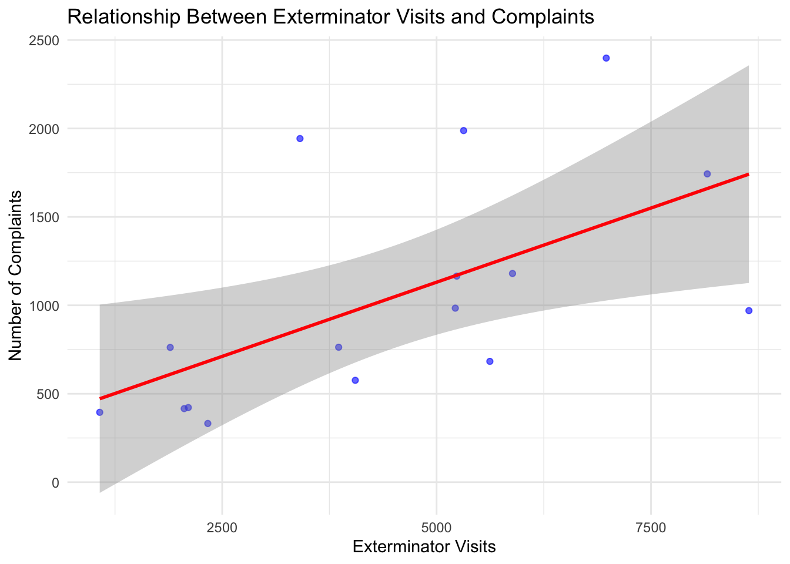

Regression Analysis
Defining variables
Dependent Variable (Y): Number of complaints (count from the 311 complaints dataset). Independent Variables (X): Exterminator visits (count from the exterminator visits dataset). Compliance inspections (count from the compliance inspections dataset).
Steps: Merge the datasets based on date and
zone_id. Run a linear regression model to assess how
independent variables influence complaints. Evaluate the model.
Click to view the detailed code
library(dplyr)##
## Attaching package: 'dplyr'## The following objects are masked from 'package:stats':
##
## filter, lag## The following objects are masked from 'package:base':
##
## intersect, setdiff, setequal, unionlibrary(ggplot2)
library(broom) # For model summary
# Load cleaned datasets
complaints_data <- read.csv("cleaned_311_complaints.csv")
exterminator_data <- read.csv("cleaned_exterminator_visits.csv")
inspections_data <- read.csv("cleaned_compliance_inspections.csv")
# Aggregate complaints data
complaints_data <- complaints_data %>%
group_by(date, zone_id, region) %>%
summarise(complaints = sum(count, na.rm = TRUE), .groups = "drop")
# Aggregate exterminator visits data
exterminator_data <- exterminator_data %>%
group_by(date, zone_id, region) %>%
summarise(exterminator_visits = sum(count, na.rm = TRUE), .groups = "drop")
# Aggregate compliance inspections data
inspections_data <- inspections_data %>%
group_by(date, zone_id, region) %>%
summarise(compliance_inspections = sum(count, na.rm = TRUE), .groups = "drop")
# Merge datasets by date, zone_id, and region
merged_data <- complaints_data %>%
inner_join(exterminator_data, by = c("date", "zone_id", "region")) %>%
inner_join(inspections_data, by = c("date", "zone_id", "region"))# Check the structure of the merged dataset
summary(merged_data)## date zone_id region complaints
## Length:16 Min. :1.00 Length:16 Min. : 332.0
## Class :character 1st Qu.:1.75 Class :character 1st Qu.: 537.5
## Mode :character Median :2.50 Mode :character Median : 866.5
## Mean :2.50 Mean :1045.0
## 3rd Qu.:3.25 3rd Qu.:1320.8
## Max. :4.00 Max. :2398.0
## exterminator_visits compliance_inspections
## Min. :1072 Min. : 1697
## 1st Qu.:2275 1st Qu.: 3804
## Median :4635 Median : 6214
## Mean :4489 Mean : 5826
## 3rd Qu.:5687 3rd Qu.: 7502
## Max. :8642 Max. :12411Click to view the detailed code
# Run Linear Regression: Complaints ~ Exterminator Visits + Compliance Inspections
regression_model <- lm(complaints ~ exterminator_visits + compliance_inspections, data = merged_data)
# Display Model Summary
model_summary <- summary(regression_model)
print(model_summary)##
## Call:
## lm(formula = complaints ~ exterminator_visits + compliance_inspections,
## data = merged_data)
##
## Residuals:
## Min 1Q Median 3Q Max
## -596.47 -342.49 -84.93 231.75 1075.31
##
## Coefficients:
## Estimate Std. Error t value Pr(>|t|)
## (Intercept) 377.11540 313.37150 1.203 0.2503
## exterminator_visits 0.25774 0.10285 2.506 0.0263 *
## compliance_inspections -0.08396 0.07754 -1.083 0.2986
## ---
## Signif. codes: 0 '***' 0.001 '**' 0.01 '*' 0.05 '.' 0.1 ' ' 1
##
## Residual standard error: 536.3 on 13 degrees of freedom
## Multiple R-squared: 0.4046, Adjusted R-squared: 0.313
## F-statistic: 4.417 on 2 and 13 DF, p-value: 0.03437# Extract Regression Coefficients
coefficients <- broom::tidy(regression_model)
print(coefficients)## # A tibble: 3 × 5
## term estimate std.error statistic p.value
## <chr> <dbl> <dbl> <dbl> <dbl>
## 1 (Intercept) 377. 313. 1.20 0.250
## 2 exterminator_visits 0.258 0.103 2.51 0.0263
## 3 compliance_inspections -0.0840 0.0775 -1.08 0.299# Evaluate Model Fit: Extract R-squared and Adjusted R-squared
r_squared <- model_summary$r.squared
adjusted_r_squared <- model_summary$adj.r.squared
# Print R-squared and Adjusted R-squared
cat("R-squared: ", r_squared, "\n")## R-squared: 0.4046251cat("Adjusted R-squared: ", adjusted_r_squared, "\n")## Adjusted R-squared: 0.313029# Visualize Regression Relationships
# Scatter plot with regression line for exterminator visits
ggplot(merged_data, aes(x = exterminator_visits, y = complaints)) +
geom_point(alpha = 0.6, color = "blue") +
geom_smooth(method = "lm", color = "red", se = TRUE) +
labs(
title = "Relationship Between Exterminator Visits and Complaints",
x = "Exterminator Visits",
y = "Number of Complaints"
) +
theme_minimal()## `geom_smooth()` using formula = 'y ~ x'
# Scatter plot with regression line for compliance inspections
ggplot(merged_data, aes(x = compliance_inspections, y = complaints)) +
geom_point(alpha = 0.6, color = "green") +
geom_smooth(method = "lm", color = "purple", se = TRUE) +
labs(
title = "Relationship Between Compliance Inspections and Complaints",
x = "Compliance Inspections",
y = "Number of Complaints"
) +
theme_minimal()## `geom_smooth()` using formula = 'y ~ x'
# Fit the regression model
regression_model <- lm(complaints ~ exterminator_visits + compliance_inspections, data = merged_data)
# Display the full model summary
model_summary <- summary(regression_model)
# Extract R-squared and Adjusted R-squared
r_squared <- model_summary$r.squared
adjusted_r_squared <- model_summary$adj.r.squared
# Print the values
cat("R-squared: ", r_squared, "\n")## R-squared: 0.4046251cat("Adjusted R-squared: ", adjusted_r_squared, "\n")## Adjusted R-squared: 0.313029